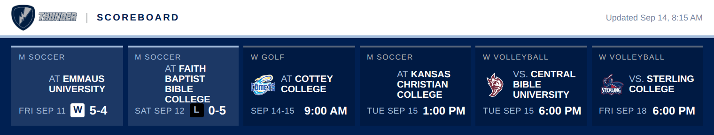
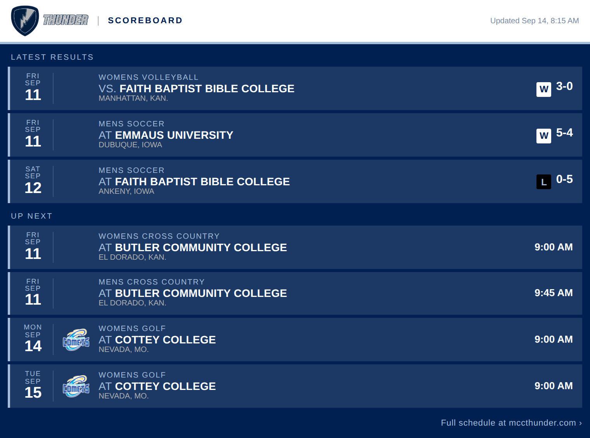

These two images are rebuilt every 15 minutes from
mccthunder.com and hot-linked by the
Thunder Scoreboard post on the Populi home page. Link to
scorebug.png and scoreboard.png in this directory
rather than saving copies, so whatever you embed stays current.